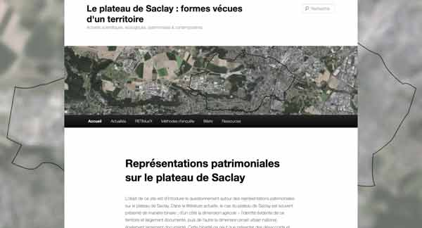

RETIMus'X
Marie Boishus, Marie-Alix Molinié-Andlauer, Isabelle Garron Équipe Interact, laboratoire I3, Télécom Paris, Institut Polytechnique de Paris, 2026
Résumé

Lien vers le site web qui rend compte de l'enquête